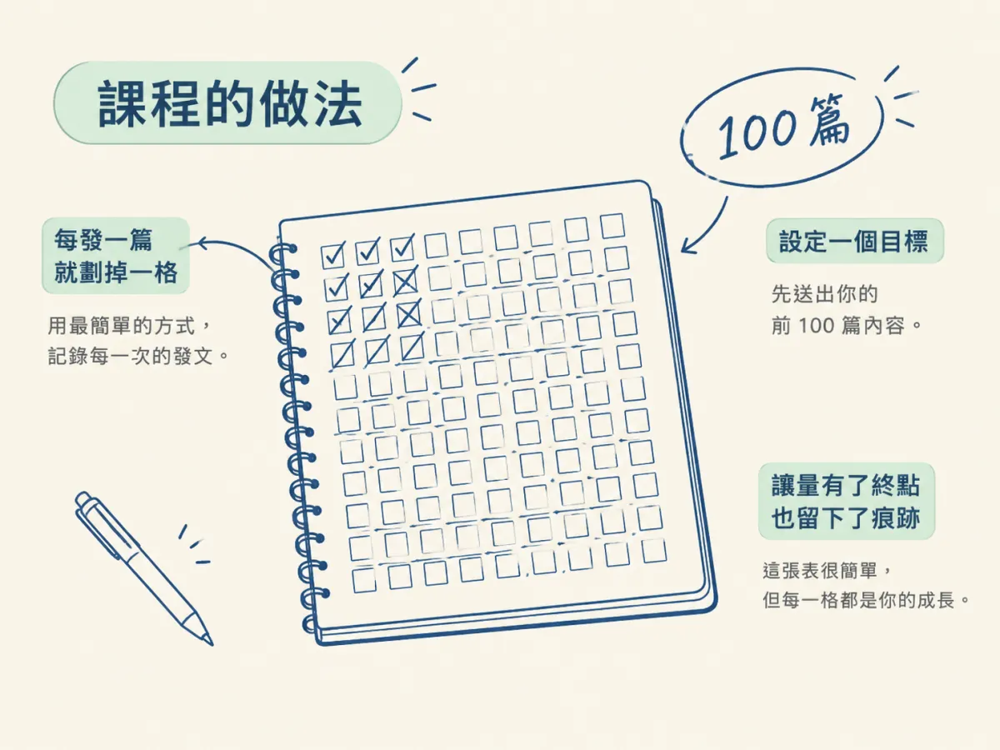
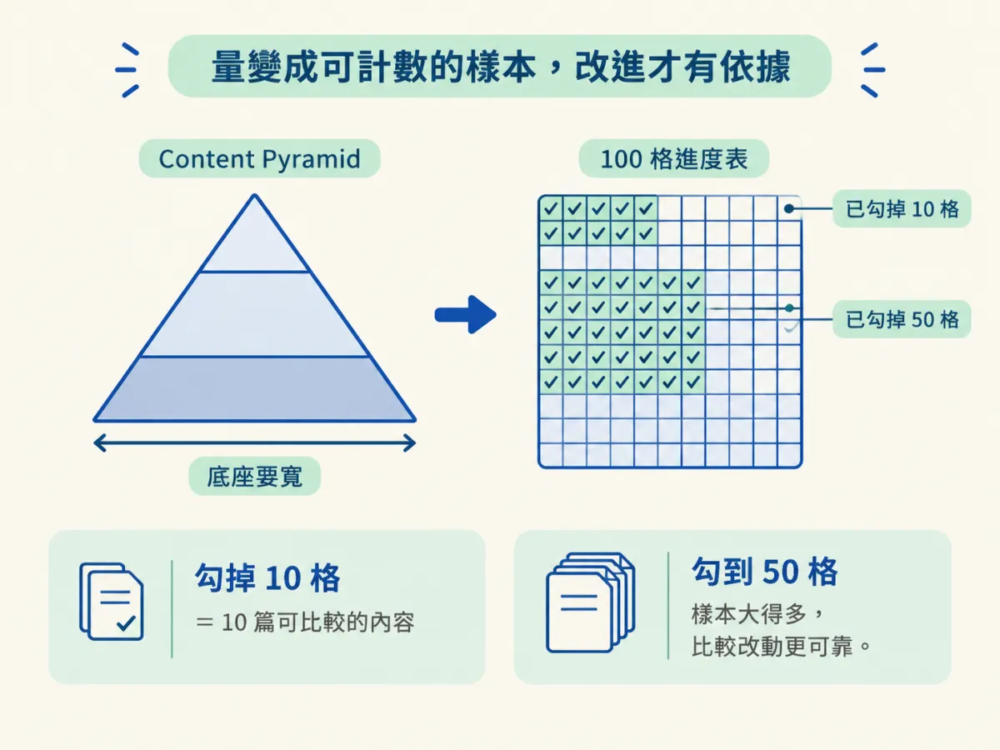

畫出一張 100 格的發文進度表，每送出一篇就劃掉一格，並依自己做得到的頻率訂出發文節奏。
前三步已經講完了為什麼要多發、每篇怎麼改一點，以及起步時該怎麼親手做。但如果到這裡為止，你還是只有一個想法，沒有一個能天天看的東西。過了幾週，你可能會想不起來自己到底發了幾篇，甚至分不清是上週停了，還是上個月就停了。
很多人一開始幹勁十足，卻在幾週後失去方向，原因往往不是缺乏能力，而是沒有一個把進度看得見的方法。這一節要教的是一張紙、一支筆，就能把「我要發很多」變成一個可以數的數字，並用它訂出自己的節奏。
課程給的具體建議只有一句，原文是：
Set a goal to ship your first 100 pieces of content. Draw 100 checkboxes in a notebook or on a board, and tick one off every time you post.
翻成白話：設定一個目標，先送出你的前 100 篇內容。在筆記本或白板上畫 100 個方框，每發一篇就勾掉一個。這張表本身很簡單，重點在於它讓量有了一個終點，也讓每一次發文都留下痕跡。

回頭看上一步的 Content Pyramid，底座要寬，量才有意義。100 格就是把「寬」這個抽象的詞，變成一個你可以點數的數字。當你勾掉十格的時候，你就有十篇可以比較的內容；勾到五十格，你手上的樣本就比十篇多得多，比較哪一種改動有效也比較有依據。

這裡要特別注意，勾格子的條件是「送出去」，不是「做到完美」。如果你把每一格都當成必須打磨到滿意才能勾，這張表就會變成另一個拖延的地方。量與改進是分開的兩件事：格子負責計數，每一篇的改進則交給 Content Pyramid 的邏輯去推動。
做完這一步，你應該能指出三樣東西：一張 100 格的表，放在你每天看得到的地方；一個你已經定義好的「一篇」標準；以及一個你自己選定的發文節奏，並且至少勾掉了第一篇的那一格。
至於為什麼要多發、為什麼每篇要改進，這些原理在前面三步已經講過；後面課程會講排程發布，那是把已經訂好的節奏交給工具按時執行的做法，等你手上已經有一套節奏，再來談它比較合適。
發文系統的核心很簡單：先定義「一篇」，畫 100 格，每送出一篇就勾掉一格，再用 100 格反推出你真的做得到的節奏。它把 Content Pyramid 的底座變成看得見的進度，讓你不必靠感覺判斷自己有沒有在進步。這一步也是本節點的收尾：你已經能說出為什麼要多發、怎麼讓每一篇都是一次改進，並且有一張表可以天天記錄，確認自己真的在做。